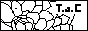

model:ryuichi and michel
paint:18.Oct.2003
［無題］
調子こいてまた男子です〜。初複数人数登場（笑）！！
いやぁ、男子は洋服のバリエーションが思い付かないので苦労します。
この為に男性用ファッション誌買おうかと考えました（笑）。
背景のうにゃうにゃってなってるのは一応影なんですねぇ。
暗い部屋でライトに照らされてるって感じ…。
って、毎回自分で説明しないと伝わらないのが悲しいです。
とにかく椅子に座った子を、と思って描いたのでタイトル思い付きませ〜ん。
山ちゃん髪短くなって難しかったです。片眉無いし（笑）。
マイケル色白過ぎてちょっと怖いですね…。服の白も失敗かなぁ。
あと、どなたか「メンツァー」のスペル教えてください（笑）。
下のブタにマウスを合わせるとそれぞれの説明が見られます。
MTKランキングアウォード2003の第一・二部ページ公開中
二部へはこちらから→第二部 （一部からも続けて見られます。）
投票頂いた皆様、本当にありがとうございました！！！


 = up!
= up!last up date 18.Oct.2003
since 3.Aug.2002
→Let's go information!
Thanks!!!!! 22222hits!!!!!!!!!!!!!!!!
next:30000etc...
20700 hit cony san
18181 10000 9999 5900 5100 3600 2222 & 1800 hit kumarin san
14000 hit yucchi san
13531 5678 & 3100 hit Syamuro san
12345 hit zizi san
6000 hit kumippe san
4000 2500 777 500 & 100 hit DJ Shu san
3900 hit Pocari san
1900 hit Youri san
1500 hit suiran san
1000 hit Gitarere san
700 hit Yui san
このHPはちー大人(管理人)がNHK「天才てれびくんMAX（ワイド）」に出演する
てれび戦士を応援する目的で個人的に運営しているものです。
番組、その他戦士に関する企業等とは何の関わりもありません。
当サイトはリンクフリーです。
でも連絡頂けると嬉しいです。遊びに伺います♪


バナーをpng形式にしてみました。
以前見られなかった方もこれで見る事が出来るようになってると嬉しいです。
昔のバナー（ブタ）は恥ずかしいので、できればこちらにして頂きたいです。